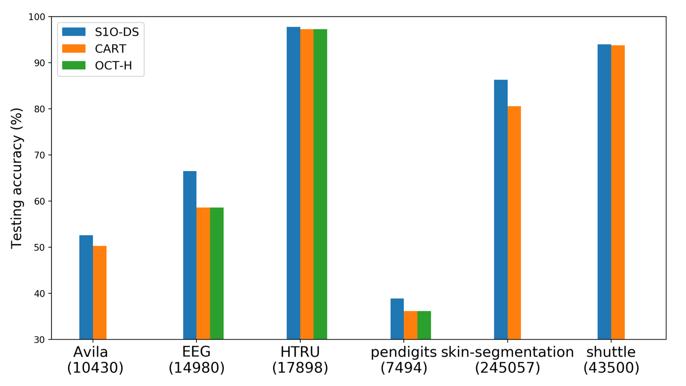

- 深さ 2 で 6〜10%中くらいの大きさのデータで、テストデータの平均精度が既存の手法より高かった幅（論文の本文の値）。深さ 3 では 17〜20% だった。
- 245,000 行skin-segmentation（245,057 行）では学習データの 0.42% だけを選び、深さ 2 のテストデータの精度が 86.3%（CART は 80.6%）だった。
- 深さ 3 で +20.4 ポイントクラスが 5 以上の 3 データで、CART より平均 20.4 ポイント、OCT-H より 17.2 ポイント高かった。
斜めの分岐は強いが貪欲法では学習しにくく、既存の MIP は数千行を超えると解けなくなる
CART や C4.5 のような貪欲法は、各ノードの分岐を後の分岐を考えずに 1 つずつ決める。木全体を一度に決める MIP の方法（OCT など）は、この問題に答えるものとして研究されてきた。複数の特徴量の線形結合で分ける多変量（斜め）の分岐は、1 つの特徴量で分ける分岐よりずっと強いが、各ノードの分岐を列挙できないので貪欲法では学習が難しい。SVM やロジスティック回帰を使う方法も、上から順に分岐を決めるので大きなデータではうまくいかないと論文は指摘する。
一方、既存の MIP の定式化（OCT、BinOCT など）は変数と制約が学習データの行数に比例して増えるので、5,000 行を超えるデータでは解けなくなる。論文は多変量の木のための新しい MIP と、学習の前にデータを絞り込む LP の手続きの 2 つでこれに取り組む。
誤分類の数に加えて、各分岐の 1-ノルム SVM のマージンとはみ出しの量を目的に入れる
深さ \(D\) の完全な二分木で、分岐ノード \(b\) は超平面 \(\langle \mathbf h_b, \mathbf x \rangle = g_b\) で点を分け、\(\langle \mathbf h_b, \mathbf x_i \rangle \le g_b\) なら左に送る。点 \(i\) が葉 \(l\) に入るかを 0-1 変数 \(e_{il}\)、誤分類かを 0-1 変数 \(c_i\)、葉のラベルを \(u_l\) で表す。SVM1-ODT の目的関数は次の 3 つの項の和である。
ほかの部分を固定すると、各分岐ノードの超平面を選ぶ問題は、そのノードに届いた点を左右に分ける 2 クラスの分類器を作る問題になる。論文はこれをソフトマージンの 1-ノルム SVM として書き、すべての分岐ノードで足し合わせた。\(m_{ib}\) は点 \(i\) が超平面 \(b\) から \(\epsilon\) の幅を取れない分のはみ出しで、\(\|\mathbf h_b\|_1\) はマージンを広げる項である。2-ノルムでなく 1-ノルムを使うのは線形にできるからで、超平面の係数を疎にして特徴量を選ぶ効果もある。OCT-H は使う特徴量の数（0-ノルム）に罰則をかけるが、そのために係数ごとに 0-1 変数が要る。SVM1-ODT は 1-ノルムで疎にするので、その 0-1 変数がいらない。
葉のラベルは \(\hat y_i = \sum_l u_l e_{il}\) で決まり、この双線形の項をマコーミック緩和で線形にする（\(e_{il}\) が 0-1 なので緩和は厳密になる）。論文は整数の \(u_l\) を区間 \([1, Y]\) の連続変数に緩めてもよいことを証明した。分岐の条件は big-M で書くが、変数の尺度を変えれば \(M = 1\) にできる（その代わり \(\epsilon\) が小さくなる）ことも示した。
各クラスから 1 点ずつ選んだ集合について成り立つ不等式を、解き始める前に加えて LP 緩和を強める
クラスが同じ点の集合を \(\mathcal N_k\) とする。各クラスから高々 1 点ずつ選んだ集合 \(I\) と、葉の任意の部分集合 \(L\) について、次の不等式が成り立つ。
この形の不等式は \(\Omega(n^Y \cdot 2^{2^D})\) 本ある。実験では、そこから導いた誤分類の総数の下界（たとえばクラスの数が葉の数 \(2^D\) より多ければ、小さいほうから \(Y - 2^D\) 個のクラスの点の数の和）などを、ソルバーを呼ぶ前に一度だけ加える。現在の最良解の目的関数の値がこの下界に届けば、ソルバーはそこで最適性を確認して止まれる。
同じ葉・同じラベルの点のうち、他の点の凸包の内側にある点は学習から外しても分類が変わらない
まず CART で木を作り、葉ごと・ラベルごとに点をまとめる。ある点の集合 \(I_0\) が同じ葉に入り、ラベル \(y\) で正しく分類されるなら、その凸包の内側にある点も同じ葉に入り、正しく分類される。そこで、凸包の内側に入る点をできるだけ多く、選ぶ点をできるだけ少なくする 0-1 の LP を各まとまりで解き、内側の点を学習データから外す。論文は、この問題のある特別な場合が通常の LP と同値で、しかも各点ごとの小さな LP（制約は \(d + 2\) 本）に分けて並列に解けることを示した。
残す点は、内側の点を凸結合で表すときに重み \(1/(d+1)\) 以上で使われる点（カラテオドリの定理から、内側の点ごとに少なくとも 1 つある）と、CART の分岐の超平面に近い点である。超平面に近い点を選ぶのは、境界の近くの点が学習に最も重要だという SVM の考え方による。こうして選んだ点だけで SVM1-ODT を解く。
中くらいのデータでは既存の MIP より精度が高く、大きなデータでは絞り込みと組み合わせて CART を上回った
UCI のデータを使い、OCT の論文と同じく学習 75%、テスト 25% に分け、5 分割の交差検証でパラメータを決めた。比較相手は CART（scikit-learn の既定の設定）、OCT-H、Fair（Aghaei ら 2019 の定式化から公平性の項を除いたもの）、BinOCT で、MIP はすべて CPLEX 12.9 で解いた。時間制限は中くらいのデータで 15 分か 30 分、大きなデータでは最大 4 時間である。深さ 3 の表を除き、結果は深さ 2 の木である。
中くらいのデータでは、SVM1-ODT（表では S1O）のテストデータの精度は、たとえば Iris で 98.6%（CART 92.4%、OCT-H 94.4%）、Spectf-heart で 83.3%（CART 72.0%、OCT-H 75.0%）だった。クラスが 5 以上の 3 データで深さ 3 の木を作ると、Dermatology で 98.9%（CART 76.1%、OCT-H 82.6%、Fair 86.4%）となり、平均で CART より 20.4 ポイント、OCT-H より 17.2 ポイント、Fair より 17.7 ポイント高かった。
7,000〜245,000 行の大きなデータでは、データを絞り込んでから SVM1-ODT を解く方法（S1O-DS）を、CART と OCT-H と比べた。S1O と OCT-H には CART の木を初期解として与えた。OCT-H は 4 時間のうちに初期解より良い解を見つけられないか、MIP を組み立てること自体ができなかった（表の N/A）。論文はここから、絞り込みなしに MIP だけで大きなデータの木を学習しても、CART を上回ることはまずないとしている。
| データ（行数） | S1O-DS | CART | OCT-H | 選んだ割合 |
|---|---|---|---|---|
| Avila（10,430） | 52.6 | 50.3 | N/A | 4.5% |
| EEG（14,980） | 66.5 | 58.6 | 58.6 | 2.0% |
| HTRU（17,898） | 97.8 | 97.3 | 97.3 | 3% |
| pendigits（7,494） | 38.9 | 36.2 | 36.2 | 7.1% |
| skin-segmentation（245,057） | 86.3 | 80.6 | N/A | 0.42% |
| shuttle（43,500） | 94.0 | 93.8 | N/A | 2.0% |
表1 大きなデータでの深さ 2 のテストデータの精度（%）と、絞り込みで残した点の割合（arXiv 版の補足資料の表）。N/A は OCT-H の MIP を組み立てられなかったもの。

MIP の系統で多変量の木を扱い、規模の問題にはデータの側を絞り込む方向から取り組んだ
- 解く問題：誤分類の数 ＋ \(\alpha_1\) × はみ出しの量 ＋ \(\alpha_2\) × 超平面の係数の 1-ノルム。深さは固定する（実験は深さ 2 と 3）。
- 分岐：多変量（斜め）。カテゴリの特徴量を含むデータへの拡張は補足資料にある。
- 規模：MIP そのものは行数に比例して大きくなる。大きなデータでは CART の木をもとに数 % まで絞った点だけで学習する。
（解説者の注）絞り込みのあとに MIP で得られる最適性は、選んだ点の上での最適性で、全データでの最適性ではない。論文は今後の課題として、層ごとにデータの絞り込みをやり直しながら分岐を決める、学習と絞り込みを組み合わせた方法を挙げている。同じ多変量の MIP として、OCT の論文の OCT-H がある。
@inproceedings{zhu2020scalable,
title = {A Scalable {MIP}-based Method for Learning Optimal Multivariate Decision Trees},
author = {Zhu, Haoran and Murali, Pavankumar and Phan, Dzung T. and Nguyen, Lam M. and Kalagnanam, Jayant R.},
booktitle = {Advances in Neural Information Processing Systems},
volume = {33},
year = {2020}
}
本文の数値は NeurIPS の出版版 PDF と照合した。大きなデータの表と、中くらいのデータの個別の値の一部は、arXiv 2011.03375 の補足資料による（出版版の本文には含まれない）。ページ番号は確認できなかったので BibTeX から外した。